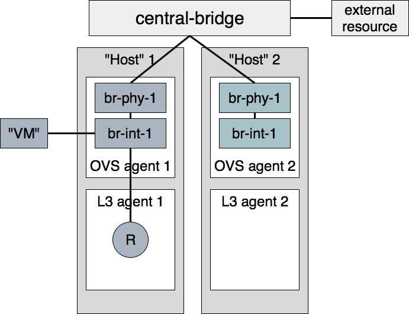

Full Stack Testing¶
How?¶
Full stack tests set up their own Neutron processes (Server & agents). They assume a working Rabbit and MySQL server before the run starts. Instructions on how to run fullstack tests on a VM are available below.
Each test defines its own topology (What and how many servers and agents should be running).
Since the test runs on the machine itself, full stack testing enables “white box” testing. This means that you can, for example, create a router through the API and then assert that a namespace was created for it.
Full stack tests run in the Neutron tree with Neutron resources alone. You may use the Neutron API (The Neutron server is set to NOAUTH so that Keystone is out of the picture). VMs may be simulated with a container-like class: neutron.tests.fullstack.resources.machine.FakeFullstackMachine. An example of its usage may be found at: neutron/tests/fullstack/test_connectivity.py.
Full stack testing can simulate multi node testing by starting an agent multiple times. Specifically, each node would have its own copy of the OVS/DHCP/L3 agents, all configured with the same “host” value. Each OVS agent is connected to its own pair of br-int/br-ex, and those bridges are then interconnected.

Segmentation at the database layer is guaranteed by creating a database per test. The messaging layer achieves segmentation by utilizing a RabbitMQ feature called ‘vhosts’. In short, just like a MySQL server serve multiple databases, so can a RabbitMQ server serve multiple messaging domains. Exchanges and queues in one ‘vhost’ are segmented from those in another ‘vhost’.
Please note that if the change you would like to test using fullstack tests involves a change to python-neutronclient as well as neutron, then you should make sure your fullstack tests are in a separate third change that depends on the python-neutronclient change using the ‘Depends-On’ tag in the commit message. You will need to wait for the next release of python-neutronclient, and a minimum version bump for python-neutronclient in the global requirements, before your fullstack tests will work in the gate. This is because tox uses the version of python-neutronclient listed in the upper-constraints.txt file in the openstack/requirements repository.
When?¶
You’d like to test the interaction between Neutron components (Server and agents) and have already tested each component in isolation via unit or functional tests. You should have many unit tests, fewer tests to test a component and even fewer to test their interaction. Edge cases should not be tested with full stack testing.
You’d like to increase coverage by testing features that require multi node testing such as l2pop, L3 HA and DVR.
You’d like to test agent restarts. We’ve found bugs in the OVS, DHCP and L3 agents and haven’t found an effective way to test these scenarios. Full stack testing can help here as the full stack infrastructure can restart an agent during the test.
Example¶
Neutron offers a Quality of Service API, initially offering bandwidth capping at the port level. In the reference implementation, it does this by utilizing an OVS feature. neutron.tests.fullstack.test_qos.TestBwLimitQoSOvs.test_bw_limit_qos_policy_rule_lifecycle is a positive example of how the fullstack testing infrastructure should be used. It creates a network, subnet, QoS policy & rule and a port utilizing that policy. It then asserts that the expected bandwidth limitation is present on the OVS bridge connected to that port. The test is a true integration test, in the sense that it invokes the API and then asserts that Neutron interacted with the hypervisor appropriately.
How to run fullstack tests locally?¶
Fullstack tests can be run locally. That makes it much easier to understand exactly how it works, debug issues in the existing tests or write new ones.
Before proceeding, please make sure that the machine runs the latest kernel from your distibution repositories (reboot the machine, if needed). Otherwise, you may experience issues with the openvswitch built from source during the environment preparation.
To run fullstack tests locally, you should clone the following repositories under /opt/stack/ directory (you may have to create it first with mkdir -p /opt/stack):
Devstack <https://opendev.org/openstack/devstack/>
Neutron <https://opendev.org/openstack/neutron>
Requirements <https://opendev.org/openstack/requirements>
When repositories are available locally, the first thing which needs to be done is preparation of the environment. There is a simple script in Neutron to do that:
$ export VENV=dsvm-fullstack
$ tools/configure_for_func_testing.sh /opt/stack/devstack -i
This will prepare needed files, install required packages, etc. When it is done you should see a message like:
Phew, we're done!
That means that all went well and you should be ready to run fullstack tests locally.
Fullstack tests execute a custom dhclient-script. From kernel version 4.14 onward, apparmor on certain distros could deny the execution of this script. To be sure, check journalctl
sudo journalctl | grep DENIED | grep fullstack-dhclient-script
To execute these tests, the easiest workaround is to disable apparmor
sudo systemctl stop apparmor
sudo systemctl disable apparmor
A more granular solution could be to disable apparmor only for dhclient
sudo ln -s /etc/apparmor.d/sbin.dhclient /etc/apparmor.d/disable/
Now that your environment is ready for tests, you can try to run just one:
$ tox -e dsvm-fullstack neutron.tests.fullstack.test_qos.TestBwLimitQoSOvs.test_bw_limit_qos_policy_rule_lifecycle
dsvm-fullstack create: /opt/stack/neutron/.tox/dsvm-fullstack
dsvm-fullstack installdeps: -chttps://releases.openstack.org/constraints/upper/master, -r/opt/stack/neutron/requirements.txt, -r/opt/stack/neutron/test-requirements.txt, -r/opt/stack/neutron/neutron/tests/functional/requirements.txt
dsvm-fullstack develop-inst: /opt/stack/neutron
{0} neutron.tests.fullstack.test_qos.TestBwLimitQoSOvs.test_bw_limit_qos_policy_rule_lifecycle(ingress) [40.395436s] ... ok
{1} neutron.tests.fullstack.test_qos.TestBwLimitQoSOvs.test_bw_limit_qos_policy_rule_lifecycle(egress) [43.277898s] ... ok
Stopping rootwrap daemon process with pid=12657
Running upgrade for neutron ...
OK
/usr/lib/python3.8/subprocess.py:942: ResourceWarning: subprocess 13475 is still running
_warn("subprocess %s is still running" % self.pid,
ResourceWarning: Enable tracemalloc to get the object allocation traceback
Stopping rootwrap daemon process with pid=12669
Running upgrade for neutron ...
OK
/usr/lib/python3.8/subprocess.py:942: ResourceWarning: subprocess 13477 is still running
_warn("subprocess %s is still running" % self.pid,
ResourceWarning: Enable tracemalloc to get the object allocation traceback
======
Totals
======
Ran: 2 tests in 43.3367 sec.
- Passed: 2
- Skipped: 0
- Expected Fail: 0
- Unexpected Success: 0
- Failed: 0
Sum of execute time for each test: 83.6733 sec.
==============
Worker Balance
==============
- Worker 0 (1 tests) => 0:00:40.395436
- Worker 1 (1 tests) => 0:00:43.277898
___________________________________________________________________________________________________________________________________________________________ summary ___________________________________________________________________________________________________________________________________________________________
dsvm-fullstack: commands succeeded
congratulations :)
That means that our test was run successfully. Now you can start hacking, write new fullstack tests or debug failing ones as needed.
Debugging tests locally¶
If you need to debug a fullstack test locally you can use the remote_pdb
module for that. First need to install remote_pdb module in the virtual
environment created for fullstack testing by tox.
$ .tox/dsvm-fullstack/bin/pip install remote_pdb
Then you need to install a breakpoint in your code. For example, lets do that in the neutron.tests.fullstack.test_qos.TestBwLimitQoSOvs.test_bw_limit_qos_policy_rule_lifecycle module:
def test_bw_limit_qos_policy_rule_lifecycle(self):
import remote_pdb; remote_pdb.set_trace(port=1234)
new_limit = BANDWIDTH_LIMIT + 100
Now you can run the test again:
$ tox -e dsvm-fullstack neutron.tests.fullstack.test_qos.TestBwLimitQoSOvs.test_bw_limit_qos_policy_rule_lifecycle
It will pause with message like:
RemotePdb session open at 127.0.0.1:1234, waiting for connection ...
And now you can start debugging using telnet tool:
$ telnet 127.0.0.1 1234
Trying 127.0.0.1...
Connected to 127.0.0.1.
Escape character is '^]'.
>
/opt/stack/neutron/neutron/tests/fullstack/test_qos.py(208)test_bw_limit_qos_policy_rule_lifecycle()
-> new_limit = BANDWIDTH_LIMIT + 100
(Pdb)
From that point you can start debugging your code in the same way you
usually do with pdb module.
Checking test logs¶
Each fullstack test is spawning its own, isolated environment with needed
services. So, for example, it can be neutron-server, neutron-ovs-agent
or neutron-dhcp-agent. And often there is a need to check logs of some of
those processes. That is of course possible when running fullstack tests
locally. By default, logs are stored in
/opt/stack/logs/dsvm-fullstack-logs.
The logs directory can be defined by the environment variable OS_LOG_PATH.
In that directory there are directories with names matching names of the
tests, for example:
$ ls -l
total 224
drwxr-xr-x 2 vagrant vagrant 4096 Nov 26 16:49 TestBwLimitQoSOvs.test_bw_limit_qos_policy_rule_lifecycle_egress_
-rw-rw-r-- 1 vagrant vagrant 94928 Nov 26 16:50 TestBwLimitQoSOvs.test_bw_limit_qos_policy_rule_lifecycle_egress_.txt
drwxr-xr-x 2 vagrant vagrant 4096 Nov 26 16:49 TestBwLimitQoSOvs.test_bw_limit_qos_policy_rule_lifecycle_ingress_
-rw-rw-r-- 1 vagrant vagrant 121027 Nov 26 16:54 TestBwLimitQoSOvs.test_bw_limit_qos_policy_rule_lifecycle_ingress_.txt
For each test there is a directory and txt file with the same name. This txt file contains the log from the test runner. So you can check exactly what was done by the test when it was run. This file contains logs from all runs of the same test. So if you run the test 10 times, you will have the logs from all 10 runs of the test. In the directory with same name there are logs from the neutron services run during the test, for example:
$ ls -l TestBwLimitQoSOvs.test_bw_limit_qos_policy_rule_lifecycle_ingress_/
total 1836
-rw-rw-r-- 1 vagrant vagrant 333371 Nov 26 16:40 neutron-openvswitch-agent--2020-11-26--16-40-38-818499.log
-rw-rw-r-- 1 vagrant vagrant 552097 Nov 26 16:53 neutron-openvswitch-agent--2020-11-26--16-49-29-716615.log
-rw-rw-r-- 1 vagrant vagrant 461483 Nov 26 16:41 neutron-server--2020-11-26--16-40-35-875937.log
-rw-rw-r-- 1 vagrant vagrant 526070 Nov 26 16:54 neutron-server--2020-11-26--16-49-26-758447.log
Here each file is only from one run and one service. In the name of the file there is timestamp of when the service was started.
Debugging fullstack failures in the gate¶
Sometimes there is a need to investigate reason that a test failed in the gate.
After every neutron-fullstack job run, on the Zuul job page there are logs
available. In the directory controller/logs/dsvm-fullstack-logs you can
find exactly the same files with logs from each test case as mentioned above.
You can also check, for example, the journal log from the node where the tests
were run. All those logs are available in the file
controller/logs/devstack.journal.xz in the jobs logs.
In controller/logs/devstack.journal.README.txt there are also
instructions on how to download and check those journal logs locally.